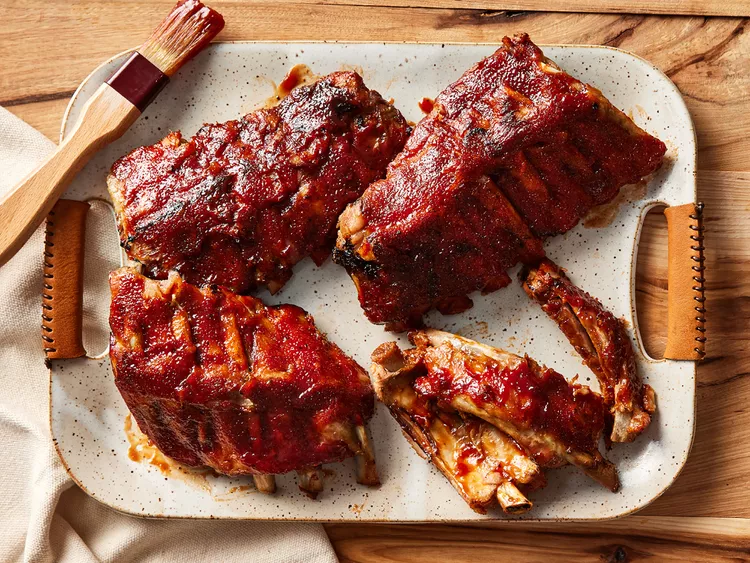

Step 1
Gather all your ingredients
:max_bytes(150000):strip_icc():format(webp)/228498-slow-cooker-baby-back-ribs-DDMFS-001-step01-04156a90808740829e5838cd1a04bcca.jpg)
Step 2
Season ribs with salt and pepper.
:max_bytes(150000):strip_icc():format(webp)/228498-slow-cooker-baby-back-ribs-DDMFS-002-step02-67ac3dc812414027833511ddd575fb77.jpg)
Step 3
Pour 1/2 cup water into the slow cooker, then add ribs. Scatter onion and garlic over top. Cover and cook on Low for 8 hours or High for 4 hours.
:max_bytes(150000):strip_icc():format(webp)/228498-slow-cooker-baby-back-ribs-DDMFS-004-step04-a6df006c14f245be91de330b7e5f06a8.jpg)

These slow cooker ribs are the best — they turn out perfect every time! They cook in a crockpot until tender, then are covered with barbeque sauce and finished in the oven for fall-apart ribs. Perfect for during the week as the slow cooker does most of the work!
3 pounds baby back ribs, trimmed
salt and ground black pepper, to taste
½ cup water
½ onion, sliced
Step 1
Gather all your ingredients
Step 2
Season ribs with salt and pepper.
Step 3
Pour 1/2 cup water into the slow cooker, then add ribs. Scatter onion and garlic over top. Cover and cook on Low for 8 hours or High for 4 hours.